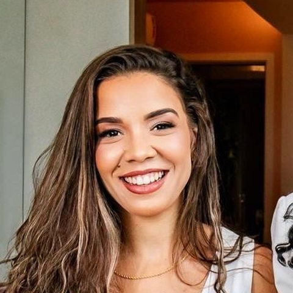

Sócia-administradora · CRO-BA 16261
Dra. Mariana Pina Azevedo Ribeiro
Especialista em Endodontia — especialidade registrada no CRO-BA.
Na Doctoralia, conta que a atuação dela é “voltada principalmente para a Endodontia, conhecida como tratamento de canal, além de procedimentos em Prótese Dentária e restaurações posteriores em resina”.
“acredito que um atendimento de qualidade começa pela escuta, pelo acolhimento e pelo cuidado individualizado com cada paciente.”Perfil na Doctoralia · Painel do CRO-BA